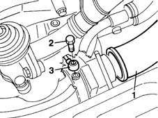
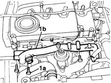
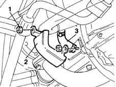
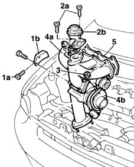

1064A19 TURBOCHARGER - EXHAUST MANIFOLD - EXHAUST PIPE CONNECTING HOSE - R.R.
- Path
- Procedures > 10 ENGINE UNIT > 1064 ENGINE TURBOCHARGING SYSTEM > 1064A turbo charger assembly > 1064A19 TURBOCHARGER - EXHAUST MANIFOLD - EXHAUST PIPE CONNECTING HOSE - R.R.
- Kind
- repair procedure (removal / refitting; the operation number is the code)
- Applies to
- engines: 1.9 JTD 8V; all production periods
- Interactive page
- https://sloeber94.github.io/elrnDB-fMltpl/en/#/2891424
Applies to: engines: 1.9 JTD 8V; all production periods
 Removing
Removing
 Refitting
Refitting1072C44 exhaust manifold heat shield on bulkhead - r+r
1076B50 exhaust pipe attachment to engine - r + r
1080C54 pipe carrying exhaust gas from e.g.r. valve to inlet manifold - r + r
1. Disconnect the air intake sleeve from the turbocharger.
2. Unscrew the fitting.
3. Disconnect the oil intake line to the turbocharger.

Applies to: engines: 1.9 JTD 8V; all production periods
1. Unscrew retaining bolts (1a) and move back rigid pipe (1b) carrying fluid to the water pump.

Applies to: engines: 1.9 JTD 8V; all production periods
Raise the lift.
1. Unscrew the retaining nuts.
2. Remove the protection from the turbocharger fluid outlet pipe.
3. Disconnect the oil outlet pipe from the turbo.

Applies to: engines: 1.9 JTD 8V; all production periods
1. Unscrew retaining bolts (1a) and remove reinforcement bracket (1b).
2. Unscrew retaining bolts (2a) and remove EGR valve (2b).
3. Undo the nuts securing the exhaust manifold to the cylinder head.
4. Remove exhaust manifold (4a) with turbocharger (4b).
5. Recover the gasket underneath the intake manifold and fit a new one.

Applies to: engines: 1.9 JTD 8V; all production periods
Refitting
RemovingFit the new intake manifold gasket.
Fit the exhaust manifold/turbocharger assembly.
Tighten the nuts securing the exhaust manifold to the cylinder head to the recommended torque.
 | Fastening | Component | Ø | Value (daNm) |
|---|---|---|---|---|
- | Nut | EXHAUST MANIFOLD/S | M8 | 2.5 |
Tighten the bolts securing the EGR valve to the exhaust manifold to torque.
| Fastening | Component | Ø | Value (daNm) |
|---|---|---|---|---|
- | Bolt | EGR VALVE | M8 | 2.5 |
Tighten the bolts securingi the turbocharger bracket to the crankcase.
Tighten the nuts securing the fluid outlet protection to the turbocharger.
Lower the lift.
Fit the rigid pipe carrying fluid to the water pump.
Tighten the bolts securing the rigid fluid filler pipe to the water pump to torque.
| Fastening | Component | Ø | Value (daNm) |
|---|---|---|---|---|
- | Bolt | COOLANT PUMP RIGID INLET PIPE | M6 | 0.9 |
Connect the oil intake pipe to the turbocharger and tighten the fitting.
Connect the air intake sleeve to the turbocharger.
1080C54 pipe carrying exhaust gas from e.g.r. valve to inlet manifold - r + r